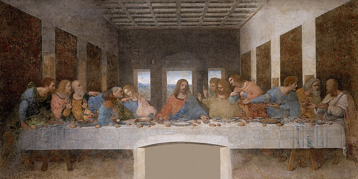
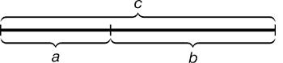
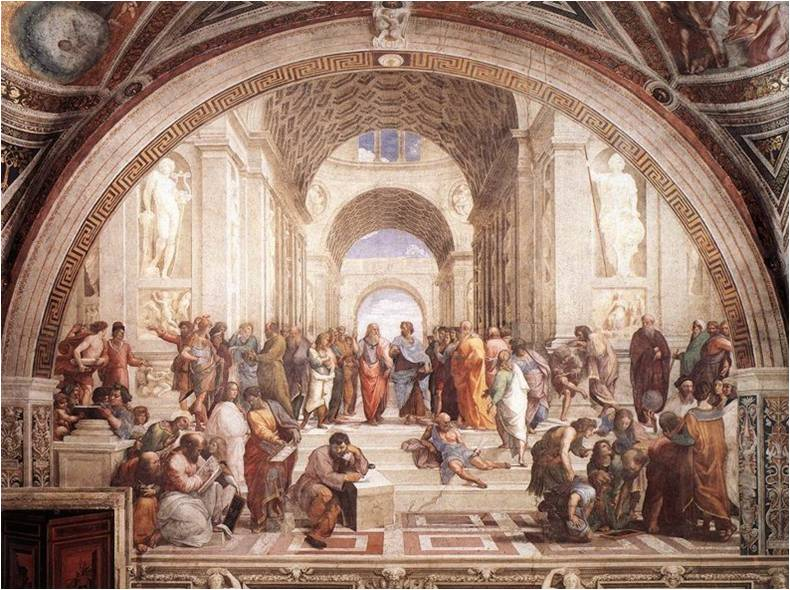

краткая иформация для тех,
кто не готов к зачету по истории искусств, но интересуется эпохой Высокого возраждения
Вернуться на главную страницу
Наиболее известные деятели искусства Высокого Возраждения

Леонардо да Винчи
Для Леонардо да Винчи искусство было средством познания мира и человека. Наука и искусство для него существовали нераздельно. Он много эксперементировал с материалами. Одним из самых больших его вкладов в жимвопись стало открытие текучести видимого мира, способ его передачи. Так появилась техника "смуфато" ( дымчатая светотень). Леонардо смог передать ощущение воздушности в картинах.
Также Леонардо связал масштаб пропорций человеческой фигуры с квадратом, длина когорого — рост человека и ввел термин "золотое сечение" для гармонического деления отрезка:

a : b = b : c
Наиболее известные работы Леонардо да Винчи это Мадонна с цветком, Тайная Вечеря, и Мадонна в скалах

Рафаэль Санти
Рафаэль Санти — итальянский живописец. Одна из самых узнаваемых его работ это роспись Ватиканского дворца "Афинская школа". В ней он изобразил выдающихся мыслителей и ученых прошлого, но с чертами своих выдающихся современников. В работе Рафаэля можно увидеть Аристотеля, Сократа, Пифагора, Евклида и других. Но так же угадывается портретное сходство Платона с Леонардо да Винчи, Гипатия и Рафаэля, Гераклита и Микеланджело.
Наиболее известные работы Рафаэля Санти это Афинская школа, Сикстинская мадонна, и Преображение